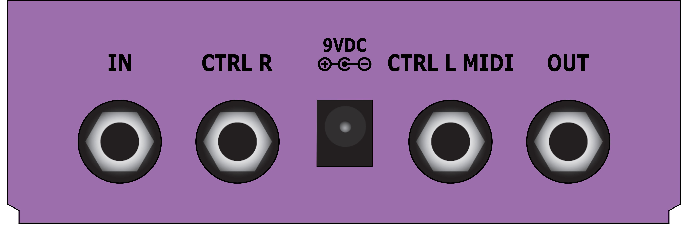
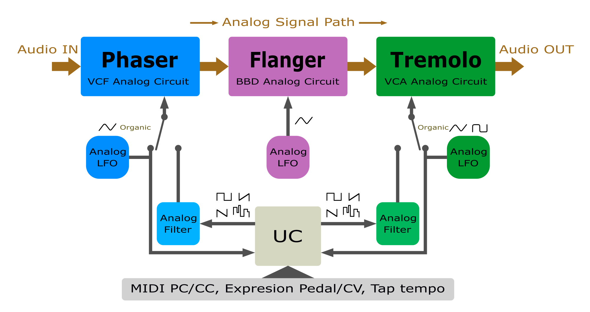
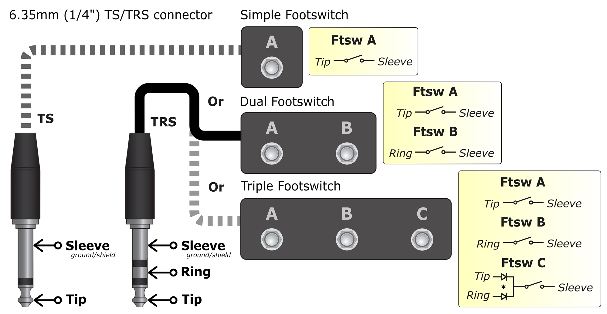
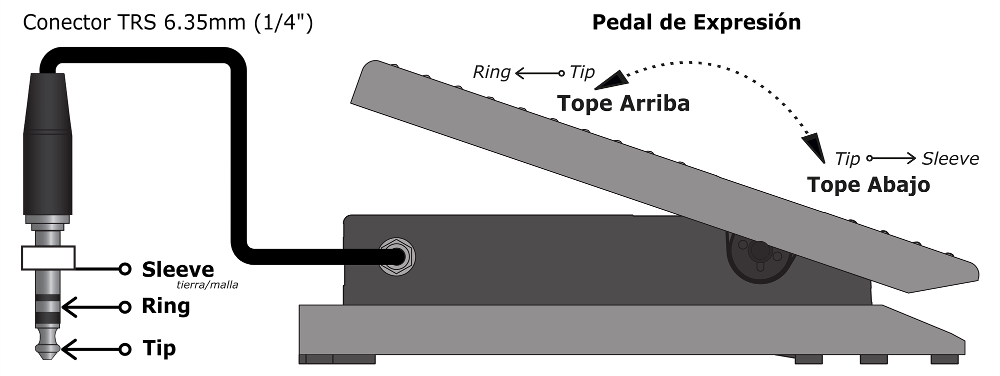
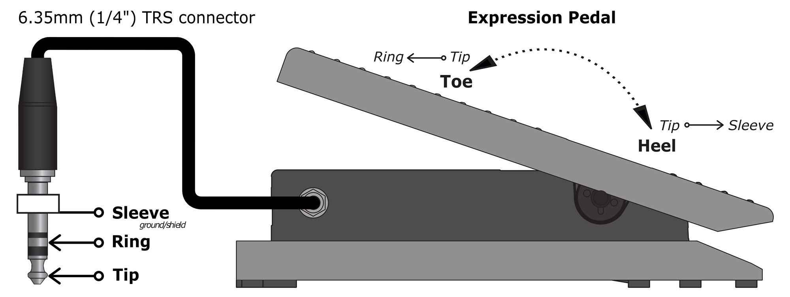
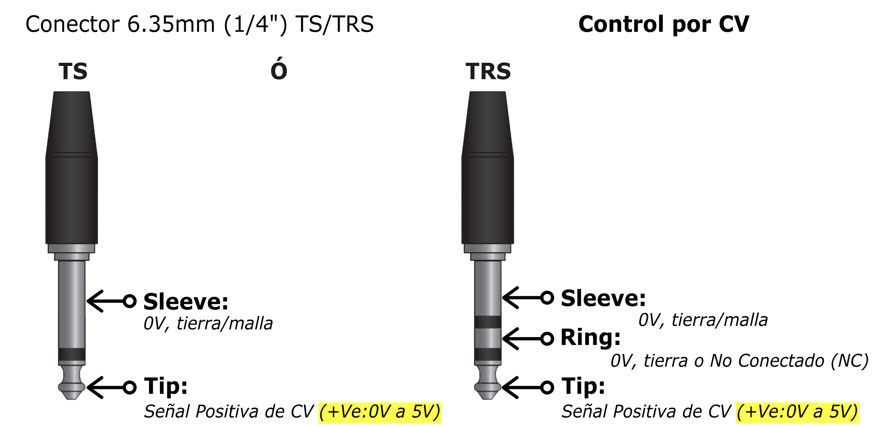
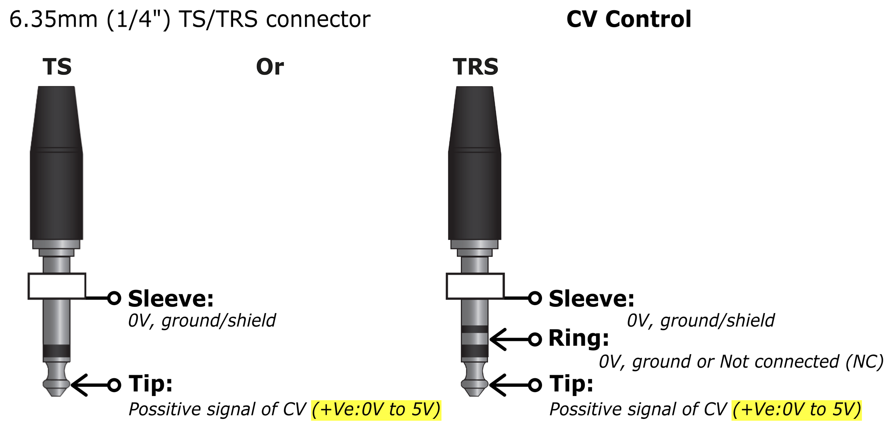

Índice
Table of Contents
Índice
Table of Contents

Gracias por adquirir el TripMod. Este manual te guiará a través de todas las funciones del pedal. Léelo completo antes de comenzar a usarlo para garantizar un uso correcto y seguro. ¡Que disfrutes el sonido!
Thank you for purchasing the TripMod. This manual will guide you through all the pedal's functions. Read it completely before use to ensure correct and safe operation. Enjoy the sound!
— Reinaldo González Reyes, RGR Audio Electronic Engineering
— Reinaldo González Reyes, RGR Audio Electronic Engineering
A lo largo del manual se usan las siguientes convenciones:
The following conventions are used throughout this manual:
| Convención | Convention | Significa | Meaning |
|---|---|---|---|
| RATE A | Nombre de control en negrita mayúscula | Bold uppercase = control name | |
| [FTSW IZQ] / [FTSW DER] | Footswitch izquierdo / derecho | Left / right footswitch | |
| LED azul encendido, otros apagados | Blue LED on, others off | ||
| presionar | press | Pulsar y soltar brevemente (<1 s) | Press and release quickly (<1 s) |
| mantener | hold | Mantener presionado ≥2 s hasta que el LED cambie | Hold down ≥2 s until LED changes |
| LFO | Low Frequency Oscillator — oscilador de baja frecuencia que modula algún parámetro de una señal de audio (amplitud, frecuencia, retardo) sin producir audio | Low Frequency Oscillator — low-frequency oscillator that modulates a parameter of an audio signal (amplitude, frequency, delay) without producing audio itself | |
| P · F · T | Letras grabadas en el panel frontal — identifican el área de controles de cada efecto: Phaser (LED azul), Flanger (LED rosado), Tremolo (LED verde) | Letters engraved on the front panel — identify each effect's control area: Phaser (blue LED), Flanger (pink LED), Tremolo (green LED) | |
| BBD | Bucket Brigade Device — retardo analógico por etapas de capacitores | Bucket Brigade Device — analog delay using cascaded capacitor stages | |
| VCF | Voltage Controlled Filter — filtro analógico controlado por voltaje (Phaser) | Voltage Controlled Filter — analog filter controlled by voltage (Phaser) | |
| VCA | Voltage Controlled Amplifier — control de amplitud por voltaje (Tremolo) | Voltage Controlled Amplifier — amplitude control by voltage (Tremolo) | |
| CV | Control Voltage — señal de control por voltaje, alternativa al pedal de expresión | Control Voltage — voltage-based control signal, an alternative to the expression pedal |
Aviso legal: La información de este documento está sujeta a cambios sin previo aviso. RGR Audio Electronic Engineering no asume responsabilidad por errores que puedan aparecer en este documento. Los nombres de producto y marcas son propiedad de sus respectivos titulares. TripMod — Manual Rev. 1.3 © 2026 RGR Audio Electronic Engineering. Reproducción sin autorización escrita estrictamente prohibida.
Legal disclaimer: The information in this document is subject to change without notice. RGR Audio Electronic Engineering assumes no responsibility for any errors that may appear in this document. Product names and trademarks are the property of their respective owners. TripMod — Manual Rev. 1.3 © 2026 RGR Audio Electronic Engineering. Reproduction without written authorization is strictly prohibited.
Todo sonido tiene tres dimensiones: tono, timbre y volumen. Los efectos de modulación intervienen sobre esas dimensiones en movimiento — no agregan una capa encima, sino que hacen que el propio sonido respire, gire y pulse en el tiempo. El motor detrás de todo eso es el LFO, un oscilador de baja frecuencia que no produce audio sino que hace vibrar parámetros: velocidad de barrido, profundidad, forma de onda. Es la diferencia entre un sonido estático y uno que evoluciona solo. TripMod reúne tres de los efectos de modulación más icónicos de la historia del audio.
Every sound has three dimensions: pitch, timbre, and volume. Modulation effects intervene on those dimensions in motion — they don't add a layer on top, but make the sound itself breathe, spin, and pulse through time. The engine behind all of this is the LFO, a low-frequency oscillator that produces no audio but makes parameters vibrate: sweep speed, depth, waveform shape. It is the difference between a static sound and one that evolves on its own. TripMod brings together three of the most iconic modulation effects in the history of audio.
En su núcleo, el Phaser divide la señal en dos caminos, desplaza la fase de uno de ellos con un filtro variable y los recombina. Esa recombinación genera cancelaciones parciales que se mueven a lo largo del espectro — el resultado es ese movimiento ondulante y orgánico que puede ir desde un halo sutil hasta una guitarra que parece hablar. Van Halen lo hizo su firma en Eruption (1978) con un MXR Phase 90 corriendo lento bajo cada nota del tapping; Shuggie Otis lo usó para darle un groove funky y espacial a Strawberry Letter 23 (1971); en Pink Floyd, Gilmour usó el MXR Phase 90 en Have a Cigar (1975) para crear un barrido envolvente en las guitarras rítmicas — lento, atmosférico, casi imperceptible en una primera escucha pero definitorio del ambiente; y Tame Impala lo lleva al terreno neo-psicodélico en Endors Toi (2012), donde phaser y sintetizador se deslizan juntos creando una textura que conecta con los 70 sin imitarlos.
At its core, the Phaser splits the signal into two paths, shifts the phase of one of them with a variable filter, and recombines them. That recombination creates partial cancellations that move across the spectrum — the result is that undulating, organic movement that can range from a subtle halo to a guitar that seems to speak. Van Halen made it his signature on Eruption (1978) with an MXR Phase 90 running slow under every tapping note; Shuggie Otis used it to give a funky, spacious groove to Strawberry Letter 23 (1971); in Pink Floyd, Gilmour used the MXR Phase 90 on Have a Cigar (1975) to create a slow, enveloping sweep on the rhythm guitars — atmospheric, almost imperceptible on first listen, yet defining the feel of the whole track; and Tame Impala brings it into neo-psychedelic territory on Endors Toi (2012), where phaser on guitar and synthesizer slide together to create a texture that echoes the 70s without imitating them.
El Flanger nació de una técnica de estudio en la que los ingenieros presionaban físicamente el borde del carrete de cinta para crear un retardo mínimo y variable. Mezclar la señal directa con esa copia retardada genera un filtro de peine en movimiento: ese efecto de avión a reacción, ese whoosh metálico que se percibe con facilidad. Hendrix lo inmortalizó en Bold as Love (1967); Heart lo disparó al arranque explosivo de Barracuda (1977) con un flanger analógico hecho a medida; The Police lo convirtieron en parte de su identidad en Walking on the Moon; Bowie lo usó de forma totalmente inusual para la época en el piano del intro de Ashes to Ashes (1980); Robert Smith de The Cure lo llevó al extremo apilando múltiples unidades para el paisaje onírico de A Forest; y Tame Impala lo integra con expansión neo-psicodélica en el outro de Mind Mischief (2012) — el puente entre el flanger analógico de los 70 y el contemporáneo.
The Flanger was born from a studio technique in which engineers physically pressed the rim of a tape reel to create a minimal, variable delay. Blending the direct signal with that slightly-delayed copy creates a moving comb filter: that jet-plane effect, that metallic whoosh that is immediately recognizable. Hendrix immortalized it on Bold as Love (1967); Heart launched it into the explosive opening of Barracuda (1977) with a custom-built analog flanger; The Police made it part of their identity on Walking on the Moon; Bowie used it in a totally unexpected way on the piano intro of Ashes to Ashes (1980); Robert Smith of The Cure took it to the extreme stacking multiple units to build the dreamlike landscape of A Forest; and Tame Impala integrates it with neo-psychedelic expansion in the outro of Mind Mischief (2012) — the bridge between the analog flanger tradition of the 70s and the contemporary sound.
El más primitivo de los tres — y el más universal. El Tremolo modula el volumen de la señal con el LFO, creando ese pulso rítmico que va desde el latido más sutil hasta el corte abrupto total. Ya estaba integrado en los amplificadores Fender y Gibson de los años 50. The Doors lo convirtieron en textura cinematográfica en Riders on the Storm (1971) — lento, hipnótico, audible desde los primeros compases; Creedence Clearwater Revival lo usó sucio y de amp, parte del ADN de Born on the Bayou (1969); Johnny Marr de The Smiths redefinió el efecto en How Soon Is Now? (1984), pasando la guitarra por cuatro Fender Twin con tremolos a velocidades distintas para crear un pulso estéreo prácticamente irrepetible. En los 90, Mazzy Star lo llevó a su uso más emotivo en Fade Into You (1993); y Ed O'Brien de Radiohead lo integró como elemento textural y rítmico en Planet Telex (1995). No modula el tono — modula la amplitud. Y eso es todo lo que necesita.
The most primitive of the three — and the most universal. The Tremolo modulates the volume of the signal with the LFO, creating that rhythmic pulse that ranges from the subtlest heartbeat to a full, abrupt cut. It was already built into Fender and Gibson amplifiers in the 1950s. The Doors turned it into cinematic texture on Riders on the Storm (1971) — slow, hypnotic, audible from the very first bars; Creedence Clearwater Revival used it raw and amp-integrated, part of the DNA of Born on the Bayou (1969); Johnny Marr of The Smiths redefined the effect on How Soon Is Now? (1984), running the guitar through four Fender Twins with tremolo set at different speeds to create a practically unrepeatable stereo pulse. In the 90s, Mazzy Star brought it to its most emotional use on Fade Into You (1993); and Ed O'Brien of Radiohead integrated it as a rhythmic and textural element on Planet Telex (1995). It doesn't modulate pitch — it modulates amplitude. And that is everything it needs.
Los controles RATE A/B son compartidos entre Phaser y Flanger. Ambos efectos pueden usarse simultáneamente.
RATE A/B controls are shared between Phaser and Flanger. Both effects can be used simultaneously.

Phaser

Flanger
| Control | Control | Tipo | Type | En Phaser | On Phaser | En Flanger | On Flanger |
|---|---|---|---|---|---|---|---|
| LED Azul | Blue LED | Phaser activo | Phaser active | — | — | ||
| LED Rosado | Pink LED | — | — | Flanger activo | Flanger active | ||
| F.DELAY | Perilla | Knob | — | — | Retardo BBD — 1ms a 13ms | BBD delay — 1ms to 13ms | |
| REG / RES | Perilla | Knob | Factor Q del filtro (VCF) | Filter Q factor (VCF) | Regeneración — feedback del delay | Regeneration — delay feedback | |
| DEPTH | Perilla | Knob | Profundidad del Efecto | Effect Depth | Profundidad del Efecto | Effect Depth | |
| RATE A | Perilla | Knob | LED rojo — velocidad A, compartido entre Phaser y Flanger. Oscila con el efecto activo. | Red LED — speed A, shared between Phaser and Flanger. Pulses with the active effect. | |||
| RATE B | Perilla | Knob | LED naranja — velocidad B (mismo comportamiento que RATE A). | Orange LED — speed B (same behavior as RATE A). | |||

Tremolo
| Control | Control | Tipo | Type | Función | Function |
|---|---|---|---|---|---|
| LED verde | Green LED | Tremolo activo | Tremolo active | ||
| DEPTH | Perilla | Knob | Profundidad del Efecto — magnitud de la variación de volumen | Effect Depth — magnitude of volume variation | |
| SHAPE | Perilla | Knob | Simetría del LFO. Activo en modos Triangular Orgánica y Cuadrada Orgánica. Inactivo en Onda Cuadrada, Rampa Ascendente, Rampa Descendente y Aleatoria. | LFO symmetry. Active in Organic Triangle and Organic Square modes. Inactive in Square Wave, Saw Up, Saw Down and Random. | |
| RATE A | Perilla | Knob | Velocidad A — LED rojo oscila en sincronía | Speed A — red LED pulses in sync | |
| RATE B | Perilla | Knob | Velocidad B — LED naranja oscila en sincronía | Speed B — orange LED pulses in sync | |
| Toggle | switch Toggle | switch Toggle | Selecciona la forma Orgánica de Tremolo: Triangular Orgánica o Cuadrada Orgánica. Inactivo en Onda Cuadrada, Rampa Ascendente, Rampa Descendente y Aleatoria (ver sección 5). | Selects the Tremolo Organic waveform: Organic Triangle or Organic Square. Inactive in Square Wave, Saw Up, Saw Down and Random (see section 5). |
| Footswitch | Footswitch | Press corto | Short press | Mantener | Hold |
|---|---|---|---|---|---|
| Izquierdo | Left | Activar / bypass Tremolo (función por defecto) | Activate / bypass Tremolo (default function) | Cambiar modo de función del footswitch izquierdo (ver sección 4) | Change left footswitch function mode (see section 4) |
| Derecho | Right | Activar / bypass Phaser (P), Flanger (F) o P+F | Activate / bypass Phaser (P), Flanger (F) or P+F | Menú de selección de efecto: P / F / P+F / Rate A/B Tremolo (ver sección 4) | Effect selection menu: P / F / P+F / Rate A/B Tremolo (see section 4) |

De izquierda a derecha:
Left to right:
| Conector | Connector | Tipo | Type | Función | Function |
|---|---|---|---|---|---|
| IN | Jack 6.35mm (1/4") mono (TS) | 6.35mm (1/4") mono jack (TS) | Entrada de audio — instrumento o fuente de señal | Audio input — instrument or signal source | |
| CTRL R | Jack 6.35mm (1/4") (TS/TRS) | 6.35mm (1/4") jack (TS/TRS) | Control externo derecho: footswitch (1, 2 ó 3 switches), pedal de expresión o señal CV. Detectado automáticamente según tipo de plug (TS/TRS). Ver secciones 6, 7 y 8 para configuración. | Right external control: footswitch (1, 2 or 3 switches), expression pedal, or CV signal. Automatically detected based on plug type (TS/TRS). See sections 6, 7 and 8 for setup. | |
| 9VDC | Conector barrel | Barrel connector | Alimentación 9V a 12V DC, centro negativo, mínimo 250mA (estándar pedal) | 9V to 12V DC power supply, center negative, minimum 250mA (standard pedal) | |
| CTRL L MIDI | Jack 6.35mm (1/4") estéreo (TRS) | 6.35mm (1/4") stereo jack (TRS) | Entrada MIDI IN exclusiva. Estándar MIDI TRS Tipo A. | Exclusive MIDI IN input. MIDI TRS Type A standard. | |
| OUT | Jack 6.35mm (1/4") mono (TS) | 6.35mm (1/4") mono jack (TS) | Salida de audio — hacia amplificador o siguiente efecto | Audio output — to amplifier or next effect |
El TripMod implementa hardware dedicados para cada efecto de modulación. El Phaser utiliza un circuito de Filtrado de voltaje controlado (VCF), el Flanger un retardo Bucket Brigade (BBD) y el Tremolo un Control de Ganancia por voltaje (VCA). Existe una Unidad de Control (UC) que se encarga del control de LFOs, MIDI, Expresión y Switches, permitiendo expandir las posibilidades del pedal.
TripMod implements dedicated hardware for each modulation effect. The Phaser uses a Voltage Controlled Filter (VCF), the Flanger a Bucket Brigade Device delay (BBD), and the Tremolo a Voltage Controlled Amplifier (VCA). A Control Unit (UC) handles LFO control, MIDI, Expression, and Switches, expanding the possibilities of the pedal.
El siguiente diagrama muestra el camino de la señal de audio a través del TripMod, e ilustra cómo interactúan los distintos bloques principales.
The following diagram shows the audio signal path through the TripMod, illustrating how the main blocks interact.

Cada efecto tiene bypass independiente mediante relé. Al bypassear, la señal pasa directamente sin coloración.
Each effect has independent relay bypass. When bypassed, the signal passes through uncolored.
Esta sección describe la operación sin dispositivos externos conectados en CTRL R — solo los dos footswitches del panel frontal.
This section describes operation without any external device connected to CTRL R — only the two front panel footswitches.
| Acción | Action | Resultado | Result | LEDs |
|---|---|---|---|---|
| Presionar (modo Effect Toggle — por defecto) | Press (Effect Toggle mode — default) | Activa / bypasea Tremolo | Activates / bypasses Tremolo | |
| Presionar (modo Rate Select) | Press (Rate Select mode) | Alterna Rate A ↔ Rate B — Phaser & Flanger | Toggles Rate A ↔ Rate B — Phaser & Flanger | / |
| Mantener (≥ 2 s) | Hold (≥ 2 s) | Cambia modo: Effect Toggle ↔ Rate Select | Switches mode: Effect Toggle ↔ Rate Select | × 3 parpadeosblinks |
| Acción | Action | Resultado | Result |
|---|---|---|---|
| Presionar | Press | Activa / bypasea el efecto seleccionado: Phaser · Flanger · Phaser+Flanger · Alterna Rate A/B Tremolo |
Activates / bypasses the selected effect: Phaser · Flanger · Phaser+Flanger · Toggles Rate A/B Tremolo |
| Mantener (≥ 2 s) | Hold (≥ 2 s) | Entra al menú de selección de efecto / Rate A/B Tremolo | Enters the effect / Rate A/B Tremolo selection menu |
Precondición: Phaser y Flanger deben estar en bypass (ambos inactivos).
Precondition: Phaser and Flanger must be in bypass (both inactive).
Sin confirmar, el menú sale por timeout (2 min) — los LEDs parpadean 3 veces y el pedal restaura la selección anterior.
Without confirming, the menu exits on timeout (2 min) — LEDs blink 3 times and the pedal restores the previous selection.
| Opción | Option | LEDs | LEDs | Función del FTSW Derecho | Right FTSW function |
|---|---|---|---|---|---|
| 1 | 1 | Activa / bypasea Phaser | Activates / bypasses Phaser | ||
| 2 | 2 | Activa / bypasea Flanger | Activates / bypasses Flanger | ||
| 3 | 3 | Activa / bypasea Phaser + Flanger | Activates / bypasses Phaser + Flanger | ||
| 4 | 4 | Alterna Rate A ↔ Rate B Tremolo | Toggles Rate A ↔ Rate B Tremolo |
Cada efecto tiene dos velocidades preconfiguradas por sus controles RATE A y RATE B. Para Tremolo: controles del área de controles de Tremolo. Para Phaser y Flanger: control compartido entre las áreas de controles de Phaser y de Flanger.
Each effect has two speeds preset by its RATE A and RATE B controls. For Tremolo: controls in the Tremolo control area. For Phaser and Flanger: shared control between the Phaser and Flanger control areas.
LEDs de Rate A/B: Los LEDs de Rate oscilan en sincronía cuando el LFO está controlado desde las perillas RATE A o B del pedal. Cuando la velocidad proviene de un Pedal de Expresión, MIDI CC o Tap Tempo, el efecto responde a esa fuente pero los LEDs continúan reflejando el oscilador local del pedal.
Rate A/B LEDs: The Rate LEDs pulse in sync when the LFO is controlled by the RATE A or B knobs. When speed comes from an Expression Pedal, MIDI CC or Tap Tempo, the effect follows that source but the LEDs continue reflecting the pedal's local oscillator.
El TripMod ofrece cinco formas de onda LFO seleccionables por menú para Phaser y Tremolo. Adicionalmente, para Tremolo, cuando se está en modo Triangular Orgánica, el switch Toggle del panel frontal permite seleccionar la variante Cuadrada Orgánica. La señal Triangular Orgánica es el oscilador analógico del circuito — la Unidad de Control la usa como referencia de amplitud (DEPTH) y frecuencia (RATE) para generar las demás formas. El Flanger siempre usa su oscilador analógico propio.
TripMod offers five menu-selectable LFO waveforms for Phaser and Tremolo. Additionally, for Tremolo, when in Organic Triangle mode, the front panel switch Toggle allows selecting the Organic Square variant. The Organic Triangle signal is the circuit's analog oscillator — the Control Unit uses it as the amplitude (DEPTH) and frequency (RATE) reference for generating all other waveforms. Flanger always uses its own analog oscillator.
Precondición: exactamente un solo efecto debe estar activo (Phaser o Tremolo — no ambos, no ninguno).
Precondition: exactly one effect must be active (Phaser OR Tremolo — not both, not none).
Sin confirmar, el menú sale por timeout (4 min) y restaura la forma de onda anterior — 3 parpadeos de todos los LEDs.
Without confirming, the menu exits on timeout (4 min) and restores the previous waveform — 3 blinks of all LEDs.
Without confirming, the menu times out and restores the previous waveform (3 blinks of all LEDs).
| Forma de onda | Waveform | LEDs (todos parpadean en el menú) | LEDs (all blink in the menu) |
|---|---|---|---|
| Triangular Orgánica | Organic Triangle | Azul (si es Phaser) | Verde (si es Tremolo) | Blue (if Phaser) | Green (if Tremolo) |
| Cuadrada | Square Wave | Rosa (igual para Phaser y Tremolo) | Pink (same for Phaser and Tremolo) |
| Rampa Ascendente | Saw Up | Verde + Azul | Green + Blue |
| Rampa Descendente | Saw Down | Rosa + Azul | Pink + Blue |
| Aleatoria | Random | Verde + Rosa + Azul (los tres) | Green + Pink + Blue (all three) |
La selección se guarda en memoria interna y se mantiene al apagar.
The selection is saved to internal memory and persists after power-off.
Se puede conectar en CTRL R un footswitch de 1, 2 o 3 botones (Momentary Switches, contacto Normal Abierto). El tipo de plug (TS o TRS) determina la configuración automáticamente.
A 1, 2 or 3-button footswitch can be connected to CTRL R (Momentary Switches, Normally Open contact). The plug type (TS or TRS) automatically determines the configuration.

| Plug | Plug | Botones disponibles | Available buttons | Detección | Detection |
|---|---|---|---|---|---|
| TS (mono) | 1 footswitch (FTSW A) | 1 footswitch (FTSW A) | Automática al conectar | Automatic on connect | |
| TRS (estéreo) | 2 botones (FTSW A + B) | 2 buttons (FTSW A + B) | Automática al conectar | Automatic on connect | |
| TRS (triple) | 3 botones (FTSW A + B + C) | 3 buttons (FTSW A + B + C) | Automática al conectar | Automatic on connect |
| Función | Function | Descripción | Description |
|---|---|---|---|
| Phaser ON/OFF | Phaser ON/OFF | Activa / bypasea Phaser | Activates / bypasses Phaser |
| Rate A/B Phaser & Flanger | Rate A/B Phaser & Flanger | Alterna Rate A ↔ B para Phaser y Flanger | Toggles Rate A ↔ B for Phaser and Flanger |
| Rate A/B Tremolo | Rate A/B Tremolo | Alterna Rate A ↔ B para Tremolo | Toggles Rate A ↔ B for Tremolo |
| Tap Tempo Phaser | Tap Tempo Phaser | Dos taps consecutivos definen el período del LFO de Phaser | Two consecutive taps set the Phaser LFO period |
| Tap Tempo Tremolo | Tap Tempo Tremolo | Dos taps consecutivos definen el período del LFO de Tremolo | Two consecutive taps set the Tremolo LFO period |
Asignación por defecto: A = Phaser ON/OFF · B = Rate A/B Phaser & Flanger · C = Rate A/B Tremolo
Default assignment: A = Phaser ON/OFF · B = Rate A/B Phaser & Flanger · C = Rate A/B Tremolo
Sin confirmar, el menú sale por timeout (2 min) sin guardar cambios.
Without confirming, the menu exits on timeout (2 min) without saving changes.
| Función | Function | Patrón LED (parpadea en el menú) | LED pattern (blinks in menu) |
|---|---|---|---|
| Phaser ON/OFF | Phaser ON/OFF | Azul solo | Blue only |
| Rate A/B Phaser & Flanger | Rate A/B Phaser & Flanger | Rosa solo | Pink only |
| Rate A/B Tremolo | Rate A/B Tremolo | Verde solo | Green only |
| Tap Tempo Phaser | Tap Tempo Phaser | Azul ↔ Rosa alternados | Blue ↔ Pink alternating |
| Tap Tempo Tremolo | Tap Tempo Tremolo | Verde ↔ Rosa alternados | Green ↔ Pink alternating |
Tap Tempo requiere un footswitch externo con función Tap asignada. Con dos taps consecutivos el sistema calcula el período como el intervalo entre ambos taps. Cada par de taps redefine el tempo. El Tap Tempo tiene prioridad sobre MIDI CC Rate: si había un rate impuesto por MIDI CC, el primer tap lo cancela.
Tap Tempo requires an external footswitch with Tap function assigned. With two consecutive taps, the system calculates the period as the interval between both taps. Each pair of taps redefines the tempo. Tap Tempo overrides MIDI CC Rate: if a rate was set by MIDI CC, the first tap cancels it.
Un pedal de expresión TRS estándar se conecta en CTRL R. El modo de operación se selecciona en el Menú Dispositivo Externo (ver sección 9). Para usar una fuente de Control Voltage (CV) en lugar de un pedal de expresión, ver sección 8.
A standard TRS expression pedal connects to CTRL R. The operating mode is selected in the External Device Menu (see section 9). To use a Control Voltage (CV) source instead of an expression pedal, see section 8.


| Modo | Mode | Función del pedal | Pedal function |
|---|---|---|---|
| Rate Phaser | Rate Phaser | Controla la velocidad del LFO de Phaser en tiempo real | Controls Phaser LFO speed in real time |
| Depth Phaser | Depth Phaser | Profundidad del Efecto Phaser: talón = centro fijo (sin modulación), punta = profundidad máxima del knob DEPTH | Phaser Effect Depth: heel = fixed center (no modulation), toe = maximum depth set by DEPTH knob |
| Modo Phaser/Wah | Phaser/Wah Mode | WAH/Phaser modulado por Pedal de Expresión: controla directamente la frecuencia del filtro Phaser. El pedal reemplaza al oscilador (efecto tipo wah estático). | WAH/Phaser modulated by Expression Pedal: directly controls the Phaser filter frequency. The pedal replaces the oscillator (static wah-type effect). |
| Rate Tremolo | Rate Tremolo | Controla la velocidad del LFO de Tremolo en tiempo real | Controls Tremolo LFO speed in real time |
| Depth Tremolo | Depth Tremolo | Profundidad del Efecto Tremolo: talón = sin modulación (señal pasa sin efecto, volumen estable), punta = profundidad máxima del knob DEPTH | Tremolo Effect Depth: heel = no modulation (signal passes through unaffected, stable volume), toe = maximum depth set by DEPTH knob |
Cuando el pedal de expresión controla el Rate o Depth, el potenciómetro físico queda en espera. Para devolver el control al knob, simplemente girarlo más del 20% de su recorrido — el control regresa al knob automáticamente.
When the expression pedal controls Rate or Depth, the physical knob is overridden. To return control to the knob, simply rotate it more than 20% of its range — control returns to the knob automatically.
Cadena de prioridad para control de Rate y Depth. El de mayor prioridad en uso toma el control.
Priority chain for Rate and Depth control. The highest priority source in use takes control.
Compatible con pedales de expresión TRS estándar (Roland EV-5, Boss FV-500L, Behringer FCV100, etc.). Conectar en CTRL R con un cable TRS estándar.
Compatible with standard TRS expression pedals (Roland EV-5, Boss FV-500L, Behringer FCV100, etc.). Connect to CTRL R with a standard TRS cable.
Además de un pedal de expresión, el TripMod acepta una señal de Control Voltage (CV) directamente en CTRL R. Esta entrada permite integrar el pedal con sintetizadores modulares, cajas de ritmo o cualquier fuente de CV estándar, usando exactamente los mismos modos de operación que el pedal de expresión (ver sección 7).
In addition to an expression pedal, the TripMod accepts a Control Voltage (CV) signal directly at CTRL R. This input allows integrating the pedal with modular synthesizers, drum machines, or any standard CV source, using exactly the same operating modes as the expression pedal (see section 7).


| Parámetro | Parameter | Valor | Value |
|---|---|---|---|
| Rango de voltaje | Voltage range | 0 V — 5 V DC | 0 V — 5 V DC |
| Voltaje mínimo | Minimum voltage | 0 V (no se admiten voltajes negativos) | 0 V (negative voltages not accepted) |
| Voltaje máximo | Maximum voltage | 5 V máx. — no superar este límite | 5 V max. — do not exceed this limit |
| Referencia | Reference | GND/chasis común entre fuente CV y pedal | Common GND/chassis between CV source and pedal |
| Conector | Connector | Jack 6.35 mm TRS — CV en TIP, GND en SLEEVE | 6.35 mm TRS jack — CV on TIP, GND on SLEEVE |
Conectar la fuente de CV en CTRL R mediante un cable TRS estándar: la señal CV va en el contacto TIP y la masa en SLEEVE. El pedal detecta automáticamente el tipo de plug y opera en modo Expresión/CV. Los modos disponibles (Rate Phaser, Depth Phaser, Wah, Rate Tremolo, Depth Tremolo) se configuran desde el Menú Dispositivo Externo (ver sección 9).
Connect the CV source to CTRL R using a standard TRS cable: the CV signal goes to the TIP contact and ground to SLEEVE. The pedal automatically detects the plug type and operates in Expression/CV mode. Available modes (Rate Phaser, Depth Phaser, Wah, Rate Tremolo, Depth Tremolo) are configured from the External Device Menu (see section 9).
Este menú configura qué tipo de dispositivo está conectado en CTRL R y qué controla. Se accede desde el pedal sin necesidad de dispositivos externos.
This menu configures what type of device is connected to CTRL R and what it controls. It is accessed from the pedal without needing any external device.
Precondición: todos los efectos deben estar en bypass (ninguno activo).
Precondition: all effects must be bypassed (none active).
Sin confirmar, el menú sale por timeout (2 minutos) — 3 parpadeos de todos los LEDs y el pedal vuelve al modo que tenía antes de entrar al menú.
Without confirming, the menu times out (2 minutes) — 3 blinks of all LEDs and the pedal returns to the mode it had before entering the menu.
| # | Modo | Mode | LEDs (parpadean) | LEDs (blinking) | Descripción | Description |
|---|---|---|---|---|---|---|
| 1 | Footswitch | Footswitch | CTRL R actúa como footswitch (1/2/3 botones). | CTRL R acts as footswitch (1/2/3 buttons). | ||
| 2 | Rate Phaser | Rate Phaser | Pedal de expresión controla Rate de Phaser | Expression pedal controls Phaser Rate | ||
| 3 | Depth Phaser | Depth Phaser | Pedal de expresión controla Depth de Phaser | Expression pedal controls Phaser Depth | ||
| 4 | Modo Phaser/Wah | Phaser/Wah Mode | ↔ | Azul y Rosa alternados. WAH/Phaser modulado por Pedal de Expresión: el pedal mueve directamente el filtro Phaser | Blue and Pink alternating. WAH/Phaser modulated by Expression Pedal: pedal moves the Phaser filter directly | |
| 5 | Rate Tremolo | Rate Tremolo | Pedal de expresión controla Rate de Tremolo | Expression pedal controls Tremolo Rate | ||
| 6 | Depth Tremolo | Depth Tremolo | Pedal de expresión controla Depth de Tremolo | Expression pedal controls Tremolo Depth | ||
| 7 | Disabled | Disabled | Los tres parpadean juntos. CTRL R ignorado — los knobs del panel tienen control total. | All three blink together. CTRL R ignored — panel knobs have full control. |
El TripMod responde a 36 Program Changes (PC 0–35) en el canal MIDI configurado. Los cambios marcados con (*) se guardan en memoria.
TripMod responds to 36 Program Changes (PC 0–35) on the configured MIDI channel. Changes marked (*) are saved to memory.
| PC | Función | Function |
|---|---|---|
| Activación de efectosEffect activation | ||
| 0 | Bypass todos los efectos activos | Bypass all active effects |
| 1 | Phaser ON | Phaser ON |
| 2 | Phaser Bypass | Phaser Bypass |
| 3 | Flanger ON | Flanger ON |
| 4 | Flanger Bypass | Flanger Bypass |
| 5 | Tremolo ON | Tremolo ON |
| 6 | Tremolo Bypass | Tremolo Bypass |
| 35 | Phaser + Flanger ON (combo simultáneo) | Phaser + Flanger ON (simultaneous combo) |
| Selección Rate A/BRate A/B selection | ||
| 7 | Phaser Rate A | Phaser Rate A |
| 8 | Phaser Rate B | Phaser Rate B |
| 9 | Flanger Rate A | Flanger Rate A |
| 10 | Flanger Rate B | Flanger Rate B |
| 11 | Tremolo Rate A | Tremolo Rate A |
| 12 | Tremolo Rate B | Tremolo Rate B |
| LFO Waveform — Phaser (*)LFO Waveform — Phaser (*) | ||
| 13 | Phaser LFO → Triangular Orgánica | Phaser LFO → Organic Triangle |
| 14 | Phaser LFO → Cuadrada | Phaser LFO → Square Wave |
| 15 | Phaser LFO → Rampa Ascendente | Phaser LFO → Saw Up |
| 16 | Phaser LFO → Rampa Descendente | Phaser LFO → Saw Down |
| 17 | Phaser LFO → Aleatoria | Phaser LFO → Random |
| LFO Waveform — Tremolo (*)LFO Waveform — Tremolo (*) | ||
| 18 | Tremolo LFO → Triangular Orgánica | Tremolo LFO → Organic Triangle |
| 19 | Tremolo LFO → Cuadrada | Tremolo LFO → Square Wave |
| 20 | Tremolo LFO → Rampa Ascendente | Tremolo LFO → Saw Up |
| 21 | Tremolo LFO → Rampa Descendente | Tremolo LFO → Saw Down |
| 22 | Tremolo LFO → Aleatoria | Tremolo LFO → Random |
| Toggle forma Tremolo orgánicoTremolo organic waveform toggle | ||
| 23 | Tremolo → Triangular Orgánica (solo en modo Triangular Orgánica) | Tremolo → Organic Triangle (only in Organic Triangle mode) |
| 24 | Tremolo → Cuadrada Orgánica (solo en modo Triangular Orgánica) | Tremolo → Organic Square (only in Organic Triangle mode) |
| Expresión y control externoExpression and external control | ||
| 25 | External Device (Footswitch/Expresión) Disable — knobs toman control total (*) | External Device (Footswitch/Expression) Disable — knobs take full control (*) |
| 26 | Reservado | Reserved |
| 27 | Tap Tempo Phaser — cada envío = un tap. Para definir el tempo, enviar dos PC 27 consecutivos. | Phaser Tap Tempo — each send = one tap. To set the tempo, send two consecutive PC 27 messages. |
| 28 | Tap Tempo Tremolo — cada envío = un tap. Para definir el tempo, enviar dos PC 28 consecutivos. | Tremolo Tap Tempo — each send = one tap. To set the tempo, send two consecutive PC 28 messages. |
| 29 | Expression → Rate Phaser (*) | Expression → Rate Phaser (*) |
| 30 | Expression → Depth Phaser (*) | Expression → Depth Phaser (*) |
| 31 | Expression → Wah/Phaser (*) | Expression → Wah/Phaser (*) |
| 32 | Expression → Rate Tremolo (*) | Expression → Rate Tremolo (*) |
| 33 | Expression → Depth Tremolo (*) | Expression → Depth Tremolo (*) |
| 34 | Expression → Footswitch (volver a modo footswitch) (*) | Expression → Footswitch (return to footswitch mode) (*) |
El TripMod responde a 5 Control Changes para ajuste continuo de Rate y Depth en tiempo real.
TripMod responds to 5 Control Changes for real-time continuous Rate and Depth adjustment.
| CC | Función | Function | Rango | Range | Descripción | Description |
|---|---|---|---|---|---|---|
| CC 20 | Rate Phaser | Phaser Rate | 0–127 | Controla la velocidad del LFO de Phaser | Controls Phaser LFO speed | |
| CC 21 | Depth Phaser | Phaser Depth | 0–127 | Controla la profundidad del LFO de Phaser (simétrica desde el centro) | Controls Phaser LFO depth (symmetric from center) | |
| CC 22 | Wah / Expresión | Wah / Expression | 0–127 | Controla directamente la frecuencia del filtro Phaser (modo Wah/Phaser) | Directly controls Phaser filter frequency (Wah/Phaser mode) | |
| CC 23 | Rate Tremolo | Tremolo Rate | 0–127 | Controla la velocidad del LFO de Tremolo | Controls Tremolo LFO speed | |
| CC 24 | Depth Tremolo | Tremolo Depth | 0–127 | Controla la profundidad del LFO de Tremolo (proporcional desde 0) | Controls Tremolo LFO depth (proportional from 0) | |
| CC 92 | Depth Tremolo (alias) | Tremolo Depth (alias) | 0–127 | Alias de CC 24 — mismo comportamiento | Alias for CC 24 — same behavior | |
| CC 95 | Depth Phaser (alias) | Phaser Depth (alias) | 0–127 | Alias de CC 21 — mismo comportamiento | Alias for CC 21 — same behavior |
MIDI CC tiene la prioridad más alta. Una vez que un CC toma el control, la fuente de menor prioridad queda en espera hasta que se cumple la condición de retorno.
MIDI CC has the highest priority. Once a CC takes control, lower-priority sources wait until the return condition is met.
| Transición | Transition | Condición de retorno | Return condition |
|---|---|---|---|
| CC Rate → Knob físico | CC Rate → Physical knob | Girar el knob más del 20% de su recorrido | Rotate the knob more than 20% of its range |
| CC Rate → Tap Tempo | CC Rate → Tap Tempo | Realizar el primer tap — cancela el override de CC Rate | Perform the first tap — cancels the CC Rate override |
| Tap Tempo → CC Rate | Tap Tempo → CC Rate | Enviar un nuevo mensaje CC Rate — toma el control inmediatamente | Send a new CC Rate message — takes control immediately |
| CC Rate → Expression | CC Rate → Expression | El pedal de expresión no cancela automáticamente el CC (ver sección 7 — Pedal de Expresión / sección 8 — CV). Mover el knob correspondiente >20% — libera el override; el pedal retoma control automáticamente. (Excepción CC 22 Wah: mover el pedal directamente) | The expression pedal does not automatically cancel CC (see section 7 — Expression Pedal / section 8 — CV). Move the corresponding knob >20% — releases the override; expression pedal resumes control automatically. (CC 22 Wah exception: move the pedal itself) |
El canal MIDI se configura al conectar la alimentación del pedal. El canal seleccionado se guarda en memoria y persiste al desconectar.
The MIDI channel is configured when connecting power to the pedal. The selected channel is saved to memory and persists after disconnecting power.
Si se suelta el footswitch derecho antes de los 2 segundos, el menú se cancela y el pedal arranca con el canal anterior.
If the right footswitch is released before 2 seconds, the menu is cancelled and the pedal boots with the previous channel.
| Canal | Channel | Patrón LED | LED Pattern | Descripción | Description |
|---|---|---|---|---|---|
| CH 1 | Azul fijo | Blue steady | |||
| CH 2 | Rosa fijo | Pink steady | |||
| CH 3 | Verde fijo | Green steady | |||
| CH 4 | Azul + Rosa fijo | Blue + Pink steady | |||
| CH 5 | Verde + Azul fijo | Green + Blue steady | |||
| CH 6 | Los tres fijo | All three steady | |||
| CH 7 | Azul parpadeante | Blue blinking | |||
| CH 8 | Rosa parpadeante | Pink blinking |
| Canal | Channel | Patrón LED | LED Pattern | Descripción | Description |
|---|---|---|---|---|---|
| CH 9 | Azul + Rosa parpadeante | Blue + Pink blinking | |||
| CH 10 | Verde parpadeante | Green blinking | |||
| CH 11 | Verde + Azul parpadeante | Green + Blue blinking | |||
| CH 12 | Verde + Rosa parpadeante | Green + Pink blinking | |||
| CH 13 | Los tres parpadeante | All three blinking | |||
| CH 14 | ↔ | Azul ↔ Rosa alternado | Blue ↔ Pink alternating | ||
| CH 15 | ↔ | Azul ↔ Verde alternado | Blue ↔ Green alternating | ||
| CH 16 | ↔ | Verde ↔ Rosa alternado | Green ↔ Pink alternating |
Azul = Phaser · Rosa = Flanger · Verde = Tremolo · Canal por defecto: CH 1
Blue = Phaser · Pink = Flanger · Green = Tremolo · Default channel: CH 1
El Reseteo de Fábrica restaura todos los parámetros guardados a los valores de fábrica. No afecta al firmware.
Factory Reset restores all saved parameters to factory defaults. It does not affect the firmware.
| Parámetro | Parameter | Valor de fábrica | Factory default |
|---|---|---|---|
| Canal MIDI | MIDI channel | CH 1 | |
| LFO Waveform Phaser | Phaser LFO Waveform | Triangular Orgánica | |
| LFO Waveform Tremolo | Tremolo LFO Waveform | Triangular Orgánica | |
| Modo dispositivo externo (CTRL R) | External device mode (CTRL R) | Disabled (knobs tienen control total) | Disabled (knobs have full control) |
| Función footswitch externo A/B/C | External footswitch A/B/C function | A=Phaser ON/OFF · B=Rate P+F · C=Rate T | A=Phaser ON/OFF · B=Rate P+F · C=Rate T |
| Función footswitch izquierdo | Left footswitch function | Effect Toggle (Tremolo) | Effect Toggle (Tremolo) |
| Efecto asignado al footswitch derecho | Effect assigned to right footswitch | Phaser | |
| Estados Rate A/B por efecto | Rate A/B states per effect | Rate A activo en todos | Rate A active on all |
| Efectos activos al encender | Effects active at power-on | Todos en bypass | All bypassed |
Cada efecto dispone de un relé electromecánico de audio independiente que conmuta la señal en modo bypass (True Bypass). El circuito Anti-Pop atenúa los transitorios audibles durante la conmutación.
Each effect features an independent electromechanical audio relay that routes the signal directly in bypass mode (True Bypass). The Anti-Pop circuit attenuates audible transients during switching.
| Parámetro | Parameter | Phaser | Flanger | Tremolo |
|---|---|---|---|---|
| Impedancia de entrada @ 1 kHz | Input impedance @ 1 kHz | 210 kΩ ±10% | 200 kΩ ±10% | 430 kΩ ±10% |
| Impedancia de salida @ 1 kHz | Output impedance @ 1 kHz | 460 Ω ±10% | 360 Ω ±10% | 980 Ω ±10% |
| Ruido residual aprox. (ponderado A) | Approx. residual noise (A-weighted) | ~ −99 dBu | ~ −104 dBu | ~ −96 dBu |
| Nivel de entrada máximo (antes de clipping) | Maximum input level (before clipping) | ver tablasee table | ~ 6.86 dBu | ~ 6.23 dBu |
| Nivel de salida máximo | Maximum output level | ver tablasee table | ~ 6.86 dBu | ~ 7.96 dBu |
Para tener mayor detalle de los valores de calidad de audio (respuesta en frecuencia y ruido residual) de la unidad específica, vea el certificado de calidad (QR debajo del pedal).
For more detail on the audio quality values (frequency response and residual noise) of this specific unit, see the Quality Certificate (QR code underneath the pedal).
El circuito de resonancia activa del Phaser (RES) incrementa la ganancia interna, reduciendo el headroom disponible. La tabla muestra el nivel máximo de entrada antes del clipping en tres configuraciones representativas.
The Phaser's active resonance circuit (RES) increases internal gain, reducing available headroom. The table shows the maximum input level before clipping at three representative settings.
| DEPTH | RES | Entrada Máx.Max. Input | Salida máx.Max. output |
|---|---|---|---|
| 100% | 100% | ~ −6.92 dBu | ~ +8.77 dBu |
| 50% | 50% | ~ +1.19 dBu | ~ +8.64 dBu |
| 100% | 0% | ~ +2.71 dBu | ~ +8.44 dBu |
| Parámetro | Parameter | Valor | Value |
|---|---|---|---|
| Tensión de alimentación | Supply voltage | 9V DC (máx. 12V, regulación ≤ 5%) | 9V DC (max. 12V, regulation ≤ 5%) |
| Polaridad | Polarity | Centro negativo (estándar pedal) | Center negative (standard pedal) |
| Consumo de corriente | Current consumption | 130 mA máx.max. | |
| Conector | Connector | Barrel 5.5 mm / 2.1 mm | 5.5 mm / 2.1 mm barrel |
| Parámetro | Parameter | Valor | Value |
|---|---|---|---|
| MIDI In | MIDI In | TRS Tipo A, Jack 6.35mm (1/4") — estándar MIDI TRS-A | TRS Type A, 6.35mm (1/4") jack — MIDI TRS-A standard |
| Canales MIDI | MIDI channels | 1–16 (configurable en boot)(configurable at boot) | |
| Program Changes | Program Changes | PC 0–35 (36 comandoscommands) | |
| Control Changes | Control Changes | CC 20, 21, 22, 23, 24 alias: CC 92 (Tremolo Depth), CC 95 (Phaser Depth) |
|
| Formas de onda LFO | LFO Waveforms | Phaser: 5 formas · Tremolo: 6 formas | Phaser: 5 shapes · Tremolo: 6 shapes |
| Rango LFO — Phaser / Flanger | LFO range — Phaser / Flanger | ~ 0.06 Hz – 12 Hz | |
| Rango LFO — Tremolo | LFO range — Tremolo | ~ 1 Hz – 24 Hz |
| Parámetro | Parameter | Valor | Value |
|---|---|---|---|
| Dimensiones (Ancho × Profundidad × Altura) | Dimensions (Width × Depth × Height) | 120 × 105 × 60 mm | |
| Peso | Weight | 840 g | |
| Gabinete | Cabinet | Metal (acero 1.5 mm), pintura epoxi electrostática | Steel (1.5 mm), electrostatic epoxy finish |
| Panel de controles | Control panel | Aluminio anodizado, grabado en laser | Anodized aluminum, laser engraved |
RGR Audio Electronic Engineering garantiza este producto contra defectos de materiales y mano de obra bajo uso normal por un período de 3 años desde la fecha de compra original.
Esta garantía cubre únicamente defectos de fabricación. No cubre daños causados por uso inapropiado, accidentes, modificaciones no autorizadas, desgaste normal, o daños por agua o electricidad.
Para hacer válida la garantía, el producto debe ser retornado a RGR en su embalaje original o equivalente, con prueba de compra.
RGR Audio Electronic Engineering warrants this product against defects in materials and workmanship under normal use for a period of 3 years from the date of original purchase.
This warranty covers manufacturing defects only. It does not cover damage caused by misuse, accidents, unauthorized modifications, normal wear and tear, or water/electrical damage.
To make a warranty claim, the product must be returned to RGR in its original or equivalent packaging, with proof of purchase.
Para consultas técnicas, reparaciones y garantía:
For technical questions, repairs and warranty: